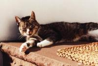
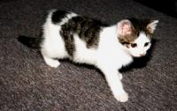

FelineVWM Cats
FVWM would not have been possible without the tails, ears and the little paws of the coziest beings in the world: our cats. Well, perhaps we could have done without the paws. If your pet ever walked straight over your keyboard, chased your mouse pointer (yes, I know cats are supposed to catch mice, but still…) or fell asleep on your trackball you know what I mean. ^_^
Dominik’s Cats
Kassandra
 female, * 1989, + on 23rd of June in 2000 (bitten to death by a dog)
{kind=link}
Kassandra was my favourite before I got Niniel, Luthien and Tilion. I had to leave her behind when I moved to Southern Germany. I loved her very much and I did not want to force her to move with me. We got them at the age of 1 and a half years and it took three month before she came down from the heating pipes in our cellar.
Luthien
 female, * 13th of September 1998, + run over by a car on 18th of March 1999)
female, * 13th of September 1998, + run over by a car on 18th of March 1999)
Was the most beautiful kitten I’ve ever seen. She was my favourite cat the instant I saw her (she was hiding in the attic and hissed when I came too close). Had the strongest character and the largest eyes of the three. I miss her so much!
Niniel
 (full name: Niniel Nienor), female, * 13th of September 1998, + passed away in peace on 20th of May 2011
{kind=link}
The smallest and cutest of my three cats. A saucy little whirlwind that loves piddling on my bed and sofa. I have to find a better photograph.
Tilion
 (male, * 13th of September 1998, ran away October 2002)
(male, * 13th of September 1998, ran away October 2002)
The biggest of my three cats. Hobbies: feeding and squawking. Once we tested when Tilion would stop feeding, but had to break off the experiment when we ran out of cat food.
Geoffrey and Pepper
 male, * 1988, Pepper missing for years now (picture of Geoffrey below), Geoffrey
was put to sleep on 26th of November 2001
male, * 1988, Pepper missing for years now (picture of Geoffrey below), Geoffrey
was put to sleep on 26th of November 2001
Two big black tomcats with a few white patches on the belly. Most of the time when not feeding or sleeping they stray around the neighbourhood. Geoffrey was the terror of the cats in the area. I had to leave him behind when I moved to Althengstett.
Blacky and Tiger
 female and male, * 1980, Tiger was given away when he was one and a half
years old, Blacky was shot by a forest warden in 1987.
female and male, * 1980, Tiger was given away when he was one and a half
years old, Blacky was shot by a forest warden in 1987.
I can hardly remember those two. Tiger was given away because he slobbered in the lap of our visitors (we never forgave our parents). Have you seen his ears? Perhaps we had better called him ‘Radar’. Blacky was a great hunter and the most undemanding cat we had. She suffered terribly when she was shot before the doctor put her to sleep.
Dan’s Cat
Angel
{kind=link}
Rescued from the front window of a deli, Angel leads an indoor cats life. To save our furniture Angel’s front claws are removed. I believe, as a direct consequence, she’s one of the most dangerous cats I’ve encountered. That’s right, watch out for this cat, she bites, hard.
Hippo’s Cats
Corky

Champion rat catcher. Proper name Corkscrew because he spent the first five minutes of his life going around in circles until he discovered that he had hind legs.
Scotty
{kind=link}
A Garfield fan. Originally named after Robert Falcon Scott the famous (if you’re British) polar explorer as she was the first kitten to make it to the top the curtains and the only cat I know of to have gone up the inside of a pair of trousers hanging in a wardrobe. She has since lost the travel bug and spends her time testing the sofa for long term comfort.
Sir Boris II

A strange looking cat with a taste for grass, carrots, bananas and blackcurrant juice.
Bob’s Cat
Tiny

A playful lynx-point Siamese, she probably understands more about the FVWM code than I do by now. The only problem is getting her to stop typing while I’m trying to type. (Like I said, she’s playful.) One of these days, I’ll try to get a picture of her in a debugging session, and a picture of her sister.
Mikhael’s Cats
Murzilka

(short name: Murzya), a lovely kitty, from May 1999. When she was smaller, she loved to play with a mouse pointer and watch dynamic screensavers. Loves sleeping on the monitor with the tail falling onto the display. Can’t bear washing.
Cassy

(full name: Cassandra), from Oct 2000. Sometimes a full opposite to Murzilka, dominating, highly sociable, lap cat, fearless, loves to stay on two back legs and play non-stop with toys.
Oliver’s Cat
Lili

A sweet and emotional cat, from September 1992. She does not like especially computers except when she wants her diner! She likes mouses but I have a touch pad …
Brad’s Cat
Blaise

You guessed it Blaise after Blaise Pascal, what else would you expect from a programmer, and a math loving wife. Blaise is in her usual spot waiting for dinner, she is good at telling time her clock is just an hour fast.
Jason’s “Cat”
Grendel

OK, in this page he’s more like “bait”. Grendel is a prairie dog, about 18 months old in this picture.
Alex’s Cat
Bob

My cat Bob is a very affectionate and totally loyal friend who’s just had his 7th birthday. He eats too much, sleeps too much, and demands a lot of attention, often doing somersaults in my lap while I’m trying to work on my computer. I think he’s jealous of it. Bob is fully trained and very obedient and does all sorts of tricks like “beg” and “roll over”.
Thomas’ Cat
Mildred

Mildred (DOB unknown - 2008) was originally a feral cat who we acquired from a re-homing scheme, along with her brother George (anyone who’s seen the sitcom George and Mildred will know the reference there), originally to keep the rat population down on the dairy farm. But as with most feral cats, if they soon realize there’s a source of food from other domestic cats, they tend not to go hunting too much. So it was that Mildred in particular was soon domesticated.
We had her ever since, even though we moved farms several times since we initially got her. One of her amusing traits was that she was always meowing, to the extent that she’d talk to you all the time. Say something – anything to her – and she’d meow back. It was rather cute.
She particularly took a liking to me and my step-father, and I won’t ever know why – I guess animals sometimes see something in a person that we do not. But I miss her, and her overly sharp claws that she’d dig in to me from time to time. Hmm, well, maybe I can try and forget the claws. :)
Jaimos’ Cats
Butters

Butters and Wendy are litter mates who were raised by a German Shepherd. Butters has grown to know no fear. His hobbies include wrestling with the shepherd, picking on Archimedes (another dog) and playing fetch. No loose hair tie is safe and any that are found will be nicely filed underneath the furniture. Butters favorite is paper. The sound of crinkling paper sends him running from any corner of the house to play fetch. When guest visit he entertains them all by making each one of them throw the ball of crumpled up paper.
Butters not so desirable hobbies are getting attention when he is being ignored. He is fond of the art of sabotage by chewing though the wires beneath the desk. Butters has learned that removing the power to the router gets him all the attention he could ever want. And no matter what he does, Butters makes up for it be walking up just purrrfectly, flopping down on his side, knowing all is forgiven.
Wendy

Wendy is sweet and mellow. She likes nothing more than a lap to curl up on. And work, work is overrated, you should just put down what you are doing and let me curl up on your lap. Doors should not be shut. Any shut door I will fight against by scratching it until it opens.
What we love about our cats:
- Their ears, tails and paws. And don’t forget the whiskers.
- Each one is a unique character.
- Purring and cuddling.
- Sleeping next to the keyboard.
What we don’t:
- Piddling on the bed.
- Screeching for food.
- Sleeping on the keyboard.
Quotes and trivia:
- “To err is human, To purr feline.” – Robert Byrne
- “Cats are like people: the females are the prickly ones and the males are good-natured idiots.”
- “Will he ever stop feeding?”
- “Ta-tadi, tatatatataaaa! Dies sind die Abenteuer des Raumschiffs Katerschweif.” (Sorry, can’t translate this to English.)
- Did you know that cats sleep about 16 hours a day?
- 54lopbg2qw^^^^^^^^^^^^^^^^^^^^^^^^^^^^^^^^^^^^^^^ “Tilion! Down from my keyboard, NOW!”
- “Mrkgnaow!” - Tiny (who read a lot of James Joyce as an undergraduate)
- “I hate cats!”
- “Weehaa!” - Grendel